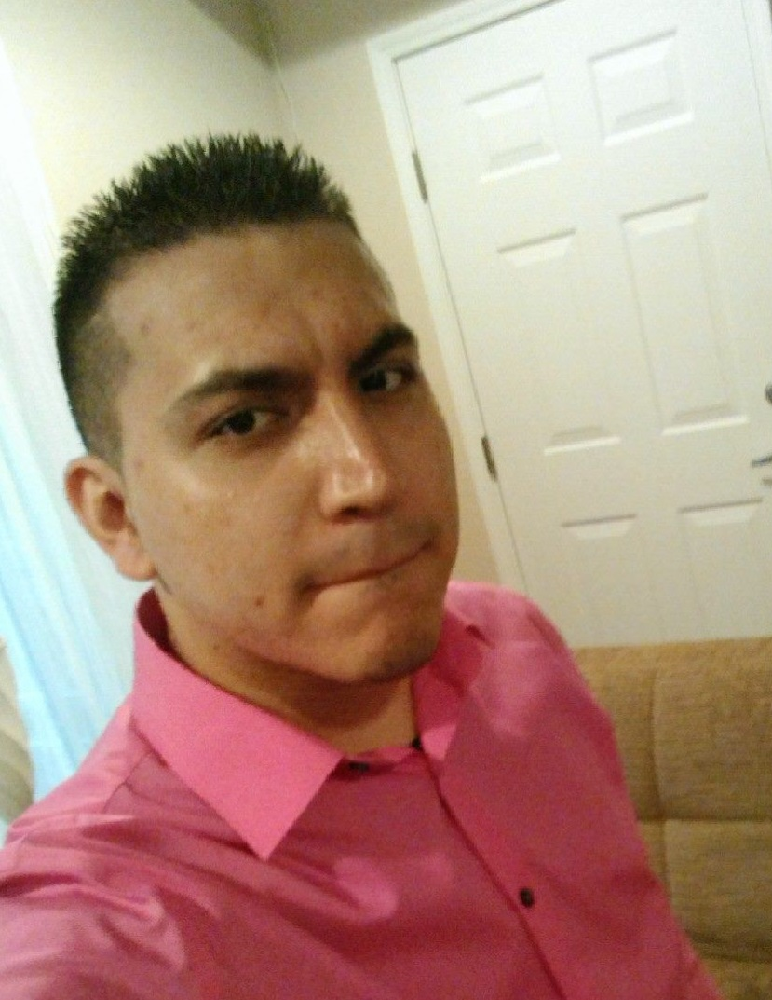

“My name is Israel Sanchez from Chicago, IL. I am 24 years old and currently a student at Year Up Chicago. Before I started this program, I can honestly say I was lost. . . I was going on my 4th year at a warehouse job and didn’t see the light at the end of the tunnel. I was always interested in tech, but I never considered myself “smart” enough to pursue it.
One day my sister informed me about Year Up, unfortunately on that same exact day I went to apply; the application submission was already due. A couple of weeks later, I received a text from Year Up stating that the deadline for applications was extended. Now six months later, I am halfway through the program and about to go on internship.
I never thought it could be possible for someone like me, I can’t wait to get started and display my potential during internship with the skills I have learned at Year Up. Combined with the skills I will learn on internship, I will finally be able to see the light at the end of the tunnel and make a name for myself!
”
― Israel Sanchez